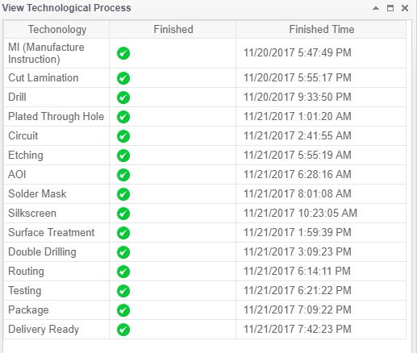

PCBWay Review (Custom PCB's delivered in under 7 days)
March 29 2018
TLDR: Over the past few months I have been evaluating PCBWay's PCB fabrication quality and service. I have placed 5 total orders of 7 different PCB designs. The boards I have received have been of excellent quality in terms of functionality. While there are definantly things that I think could be improved, see below for more details, their prices and service are almost unbeatable compared to other PCB fabs I have used. I think they are a great resource for hobbyist or small business startups.
On to the review...
For many years I have used OSHPARK for my hobby PCB's. Oshpark is a well known hobbyist PCB source that many people like myself use. However for doing larger scale production their prices are too high for end user affordability.
I came across PCBWay. I must say before going forward, PCBWay does give discounts for reviews. While discounts on future orders would be great, I will not over inflate my opinion in hopes of better "rewards", as this is my honest review of PCBWay's quality and service. With that being said, PCBWay was by far the cheapest PCB manufacturer and assembly service out of the dozen quotes I requested for 250 pISO units. They were also the quickest to get back to me as it only took 24 hours. The thing that was immediately noticeable was their offer of 10 - 2 layer PCB boards 100mmx100mm for only $5.00. Yes! They are advertising 2 layer 100mmx100mm PCB's for $5.00 and you get 10 boards in your order. What's even crazier was the fact they quoted me 7 days for delivery of my PCB's. That's 7 days production and delivery via DHL. Obviously, I was curious about the quality of these PCB's and I think anyone in their right mind would. I talked it over with my partner and we decided to place an order for the 10 PCB $5.00 deal for some prototypes. Since that time I have made a total of 5 orders of various PCB colors and sizes pictured below.

I made my first order on a Sunday and received my first 11 PCB's Friday. Yes I got an extra one. I have also received an extra on other orders. The PCB's came protected in shrink bubble wrap in a white box. The total amount for the order was $27. $5.00 for the PCB's and $22.00 for the shipping. My shipping selection was DHL 3 day delivery. I noticed they do offer cheaper shipping rates, but of course they have a longer delivery time. For context, Oshpark charges $5 per square inch for a 2 layer board with free shipping, a 100mmx100mm board would cost $75 from Oshpark compared to $27 from PCBWay. Plus I have never gotten an order from Oshpark in under 2 weeks.
Before I get to the quality I must note that you have the choice of Green, Red, Yellow, Blue, White, and Black Solder mask (the color of the PCB) for the same price. Purple, Matte Black, and Matte Green can be chosen for an additional cost. They also have the option for no solder mask color which would be interesting. For silkscreen colors (the graphics and writing on the PCB) they offer white or black. First up we have the Black PCB. Sorry for my potato quality camera, but I think most of the major details come though with these photos. One thing that is immediately obvious is the FPC connector does have some bleeding from the solder mask and solder pads. While I have found no defects in the 70+ boards that would affect functionality, it does not look as clean as some of the other boards I have had made from other FABs. Nonetheless, I have populated that header on another board and it works as expected. I have used a soldering iron and heat station for component population and had no issues with the solder pads receiving the components.

The red board is revision 2 of the black board. Some components are different and you can still see the bleeding around the FPC connection solder pads. RN1 and RN2 are small resistor network chips. RN1 is meant to be in parallel and the pad did not come out as smooth as one would hope, but it is still functional. The same with RN2, the pad is functional but not going to win a beauty contest. Be on the lookout soon as I will have an announcement soon about this project's progress.

Next up is the pISO prototypes. As you can see we have tested many user interface designs attempting to see what works best. Overall, the pISO is a pretty simple design and the quality of the PCB's are great. As you might have noticed there are some inconsistency in the silkscreen.

Here is a closer look at the inconsistency in the silkscreen. KiCad was used for PCB design, and the same footprint was used for the silkscreen image on each order. Clearly the second is the highest resolution. The right is the logo as it appears in the KiCad 3D PCB viewer tool.

Last might be my favorite PCB. Not only for the sweet design, but also I am a fan of the yellow color. This is another project I have in the works that I will make an announcement on later this year. FPC connector J4 we see the same issue with the mask/pad bleeding. Again, I have populated this header and it does work as expected.

PCB also offers FREE through-hole prototyping PCB's in a variety of sizes. I usually throw in 5 in my latest orders.

For each order at PCBWay you build points they calls beans. You can trade these beans for cool stuff like Raspberry Pis and Arduinos. I traded a number of my beans to pick up a couple of these sweet rulers that have various IC pad footprints.


In conclusion, I am truly amazed that PCBWay gives me the ability to start a weekend design project on Friday night, hammer out the details Saturday, place an order on Sunday afternoon, and have quality made PCB's by the next weekend for assembly. If you are interested in using PCBWay in your next project, get a $5 credit by following this link $5.00 PCBWay credit


{kind=link}